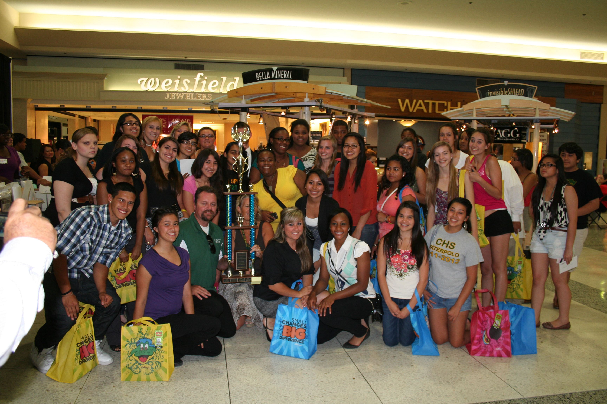
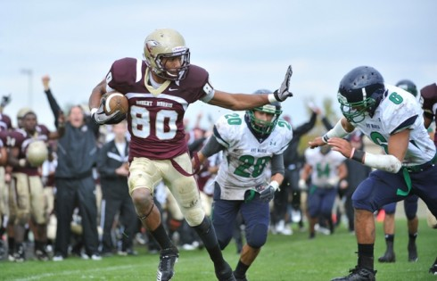

"Medium" by Thomas Hawk."Early Morning at the Monte Vista Wildlife Refuge, Colorado" by Dave Soldano.
"Sunrise in Eastern Colorado" by Pam Morris.
College Catagory
San Bernardino High School is a public school, supporting grades 9 to 12 . It's located in San Bernardino, CA in San Bernardino County.
School Ranking
San Bernardino High is unranked in the National Rankings. Schools are ranked based on their performance on state-required tests and how well they prepare students for college.College Board was the source of the Advanced Placement test data presented for schools, where applicable.

San Bernardino Football
Relive' the 2017 San Bernardino Cardinals football season. MaxPreps has their 10 game schedule and results, including links to box scores, standings, stats, photos and video highlights.